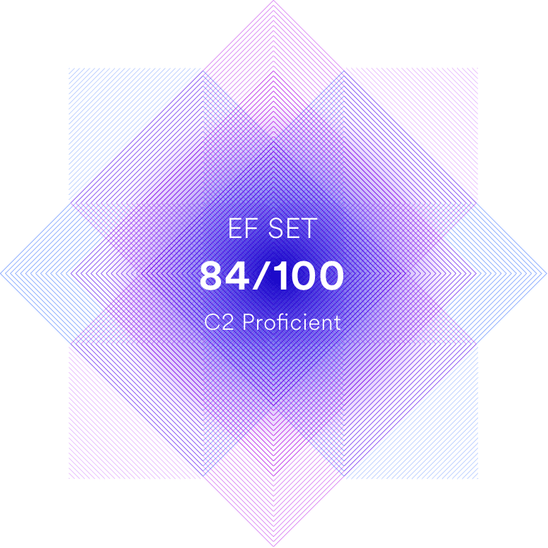

About me

Since childhood I was interested in puzzles, construction toys, and electronic devices. As a kid I tinkered with ZX Spectrum and even programmed simple games for it. At the end of high school, I discovered Red Hat GNU/Linux distribution and invested a lot of time learning and mastering it. At present, my primary goal is to grow as a developer through mentorship and hopefully future work opportunities. I'm very meticulous and attentive with my work. I'm not afraid of hard problems, and enjoy solving them. I'm innately curious, and I like to understand how things work "under the hood".
Skills
- HTML
- CSS
- JavaScript
- Test-driven Development
- Git
- Visual Studio Code
- Proficiency with GNU/Linux system administration and command-line
Code examples
const capitalizeWord = (word) => word[0].toUpperCase() + word.slice(1);
See more at:
Education & Trainings
Emperor Alexander I St. Petersburg State Transport University (PGUPS): Software for computer facilities and automated systems. Dropout.
- Berkeley CS169.1x: Engineering Software as a Service, Pt. 1
- Berkeley CS169.2x: Engineering Software as a Service, Pt. 2
- Université Paris Diderot - 56002S02: Introduction to Functional Programming in OCaml
- ITMO University: Web Programming
- MITx 6.00.1x: Introduction to Computer Science and Programming Using Python
- MITx 6.00.2x: Introduction to Computational Thinking and Data Science
- M101JS: MongoDB for Node.js Developers
- Universidad Carlos III de Madrid: INF.1x: The Software Architect Code: Building the Digital World
- W3Cx: HTML5.1x: HTML5 Part 1: HTML5 Coding Essentials and Best Practices
- W3Cx: HTML5.2x: HTML5 Part 2: Advanced Techniques for Designing HTML5 Apps
- Linux Foundation: LFS101x.2: Introduction to Linux
- Mail.Ru Group: Web Technologies
- Stepik: Introduction to Databases
- Stepik: Introduction to Linux
- Stepik: Introduction to Programming for Linux
- Stepik: Analysis of Web Projects Security
- Stepik: Python Programming
- Stepik: Python. Foundations and Usage
- Stepik: Introduction to Computer Architecture. Elements of Operating Systems
Work experience & Completed Projects
-
Rolling Scopes School: CV
Applied technologies:
- CSS Animation
- CSS Box Shadow
- CSS Pseudo-classes and pseudo-elements
- CSS Variables
- Favicon
- Web fonts
Language proficiency
English: C2 Proficient. In my spare time I read fiction & non-fiction ebooks written in English, watch TV shows with original audio tracks, and participate in online discussions to keep my language skills sharp and up to date.
Contacts
| gentoosiastic@gmail.com | |
| telegram | https://t.me/gentoosiast |
| discord | gentoosiast#2455 |